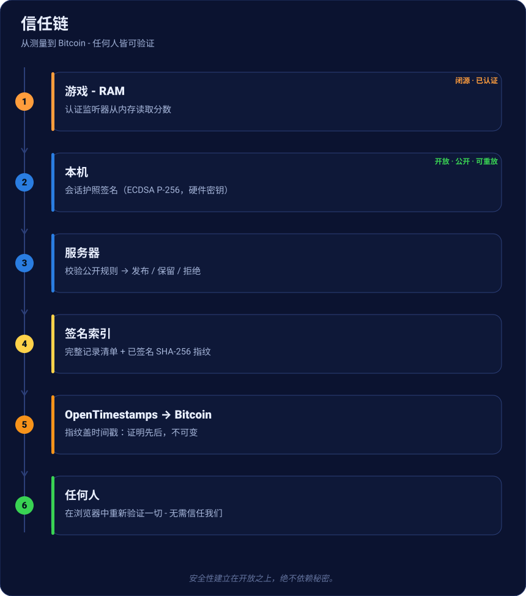
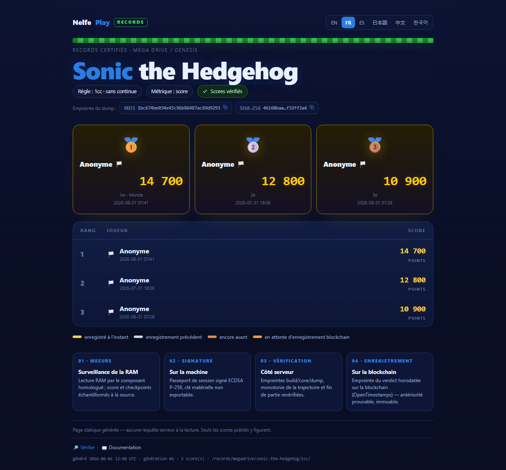
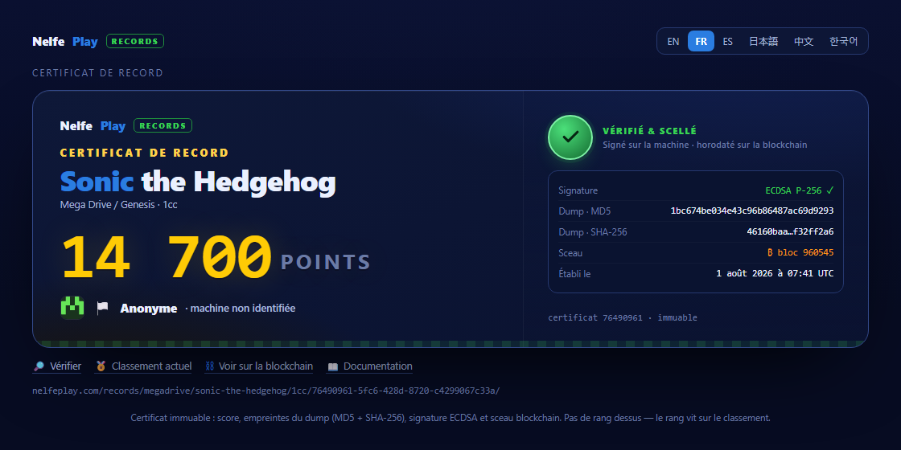
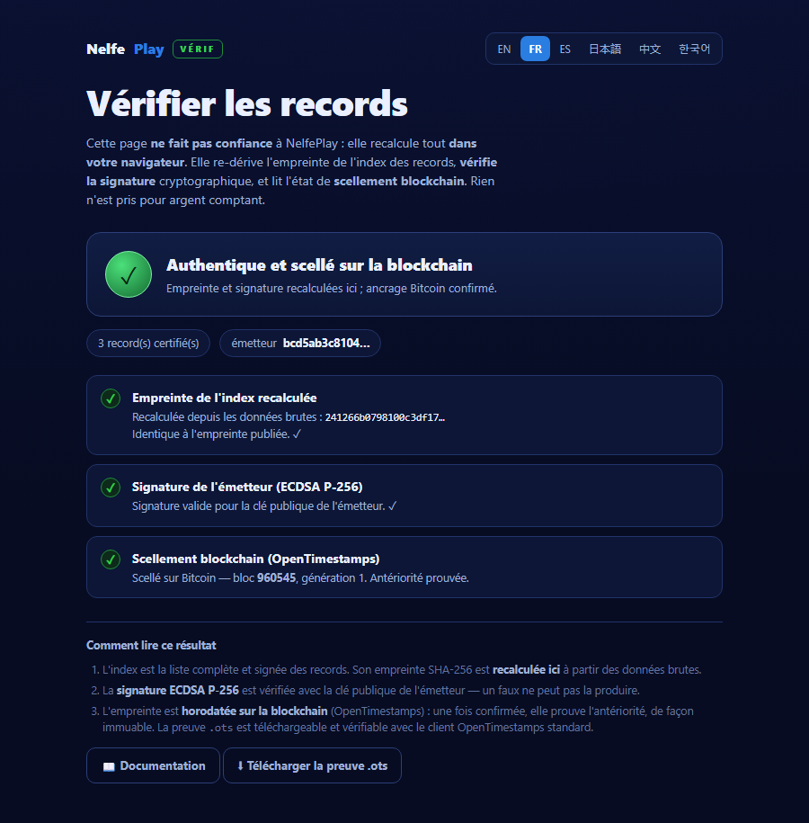

认证记录
一个无人能造假的复古分数公开排行榜 - 而且任何人都能验证，无需信任我们。以下 是从游玩到 Bitcoin 上证明的全过程。
信任链一览

每一步要么公开且可重放，要么已认证并签名。安全性从不依赖秘密（柯克霍夫斯原 则），只依赖开放。
1 · 测量，而非申报
分数不由游戏发送。一个认证组件（监听器）直接从模拟器内存中、在源头、带时间戳的 检查点读取。任何“申报”分数都不会进入系统。
2 · 在本机签名
本机组装会话护照（分数，核心/转储/监听器指纹，检查点，票据），并用不可导出的硬件 密钥（ECDSA P-256）签名。事后改动一个字节 = 签名无效。
3 · 服务器端校验
服务器不重放游戏：它应用公开规则（开源的 CoreVerifier）-预期指纹、轨迹单调 性、游戏结束、有效票据-然后给出裁决：发布、保留（统计异常，绝不硬性拒绝）或 拒绝。没有人工裁判。
4 · 发布进签名索引
已发布分数构成签名索引：完整清单 + 由签发者签名的 SHA-256 指纹。该索引重建排行 榜，并使数据库丢失无关紧要（可重建、可镜像）。

5 · 封印于 Bitcoin
索引指纹通过 OpenTimestamps 盖时间戳于 Bitcoin。一经确认，即证明记录存在于某个
区块之前 - 不可变的先后。刚封印的分数显示为金色；.ots 证明可下载，并用标准
OpenTimestamps 客户端验证。
6 · 记录证书
每个分数都有不可变、可分享的页面：分数、转储指纹（MD5 + SHA-256）、签名 ✓，以及 Bitcoin 封印（区块）。上面没有排名 - 排名在排行榜上。

7 · 无需信任我们即可验证
公开验证器重算指纹、验证签名（Web Crypto）并读取封印状态 - 在你的浏览器中。 它绝不轻信。你甚至可以自行托管。

诚实的边界
开放协议不能在数学上证明闭源监听器读取了正确地址。它证明的是认证构建存在、绑定到 正确进程、未被修改，以及应用了公开规则。对测量的信任来自一个已认证、已签名、有 版本、经审计的监听器 - 见透明度与认证。